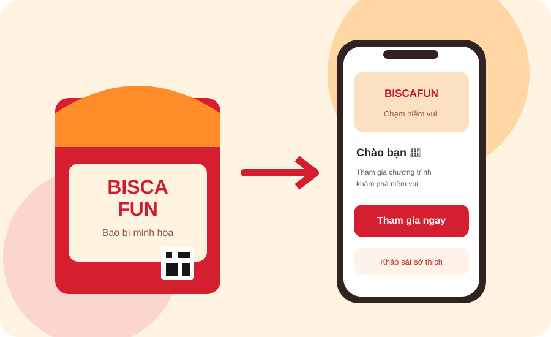
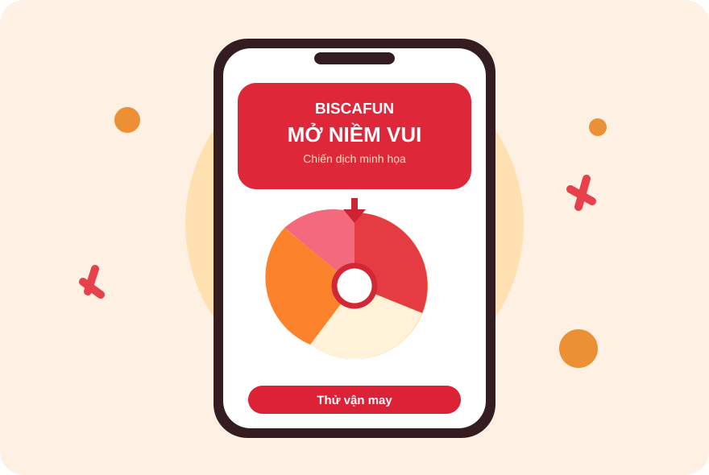
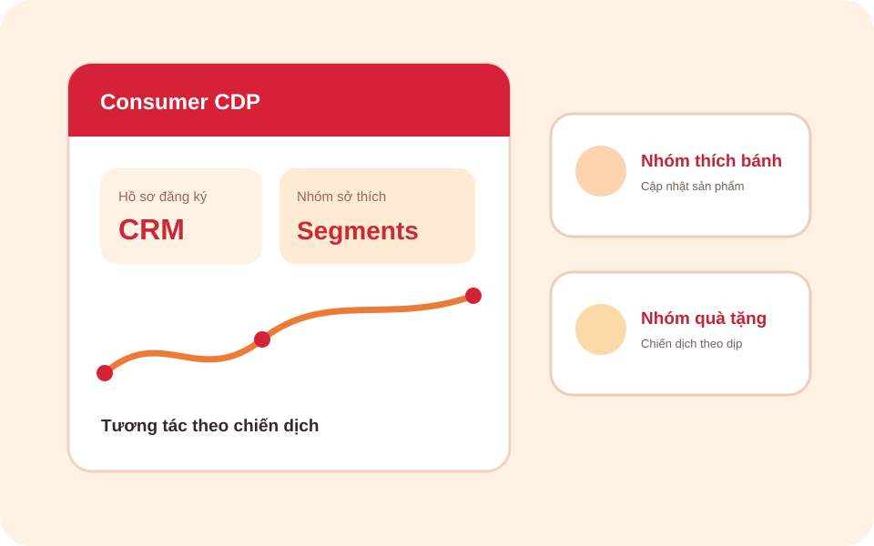

Ai đang mua Biscafun?
Người mua quan tâm đến loại sản phẩm, khẩu vị và nhu cầu nào?
Đề xuất hệ sinh thái kết nối người tiêu dùng: từ bao bì sản phẩm đến dữ liệu B2C, trải nghiệm thương hiệu và chăm sóc khách hàng.

Concept visual — không phải bao bì thực tếVới mô hình FMCG phân phối qua nhiều điểm bán, doanh nghiệp có thể tiếp cận đông đảo người mua nhưng không mặc nhiên sở hữu dữ liệu và kênh giao tiếp trực tiếp với họ.
Đây là insight phổ biến ở ngành hàng tiêu dùng, không phải kết luận Biscafun đang thiếu CRM hay dữ liệu khách hàng.
Người mua quan tâm đến loại sản phẩm, khẩu vị và nhu cầu nào?
Điểm chạm bao bì, social, website hay chương trình tại điểm bán.
Tạo lý do quay lại tương tác bằng nội dung, trải nghiệm và quyền lợi phù hợp.
Ba năng lực có thể được phát triển trên cùng một nền tảng dữ liệu, tùy vào nguồn lực và các điểm chạm hiện có của Biscafun.
Thu thập dữ liệu khách hàng có sự đồng ý qua QR, Mini App, chiến dịch số và các hoạt động thương hiệu.
Biết khách hàng là aiTạo trải nghiệm vui, khảo sát sở thích và các chương trình tương tác giúp khách có lý do trở lại.
Tạo kết nối chủ độngPhân nhóm theo sở thích, tương tác và giai đoạn tham gia để phục vụ chiến dịch tiếp theo.
Nuôi dưỡng quan hệ lâu dàiĐề xuất thử nghiệm QR trên một nhóm sản phẩm hoặc chiến dịch phù hợp, kết nối người tiêu dùng với trải nghiệm số của Biscafun.
Người tiêu dùng mua tại các kênh phân phối hiện có.
Truy cập trang đích hoặc Zalo Mini App từ bao bì, POSM hay nội dung quảng bá.
Cung cấp thông tin cần thiết, chấp thuận mục đích sử dụng dữ liệu và tham gia trải nghiệm.
CDP lưu dữ liệu được phép, phục vụ phân nhóm và tương tác phù hợp về sau.
Lưu ý: QR chung không chứng minh một lượt mua hàng thực tế. Nếu cần xác minh mua hàng/đổi thưởng, phải thiết kế mã định danh và quy tắc chống gian lận riêng.
Minh họa concept bao bì và Mini App, chưa phải giao diện sản phẩm được Biscafun phê duyệt.
Một trải nghiệm thử nghiệm: “Quét Biscafun – Mở niềm vui”. Chủ đề chiến dịch chỉ là ý tưởng đề xuất, chưa phải chương trình chính thức của thương hiệu.
Khuyến khích người tiêu dùng khám phá và tương tác với thương hiệu.
Thu thập zero-party data khi khách chủ động chia sẻ thông tin.
Tạo động lực tham gia theo ngân sách và thể lệ được duyệt.

UI minh họa — không đại diện cho tính năng đã triển khai.
Các tương tác được phép ghi nhận có thể trở thành căn cứ xây dựng phân khúc và chiến dịch tiếp theo, thay vì chỉ dừng lại ở một lượt tham gia sự kiện.
Không suy diễn “đã mua lại” từ hành vi quét QR. Đo doanh thu hoặc tần suất mua thực tế cần thêm dữ liệu giao dịch hay cơ chế xác minh độc lập.

Dashboard minh họa dữ liệu, không phải báo cáo vận hành thực tế của Biscafun.
Không đề xuất triển khai toàn bộ danh mục sản phẩm ngay từ đầu. Thử nghiệm trên một dòng sản phẩm hoặc chiến dịch với phạm vi được thống nhất.
Xác minh nguồn dữ liệu hiện có, mục tiêu Marketing và kênh triển khai khả thi.
Chọn sản phẩm, điểm chạm QR, quyền lợi, hành trình và tiêu chí thành công.
Triển khai luồng đăng ký, Mini App, dữ liệu và truyền thông theo phạm vi được duyệt.
Đối chiếu KPI và phản hồi để quyết định cải tiến hay nhân rộng.
Lượt quét QR · Tỷ lệ mở trải nghiệm · Tỷ lệ đăng ký hợp lệ · Tỷ lệ hoàn thành tương tác · Sự đồng ý nhận thông tin · Tỷ lệ quay lại tương tác. Chốt mục tiêu số sau khi có baseline.